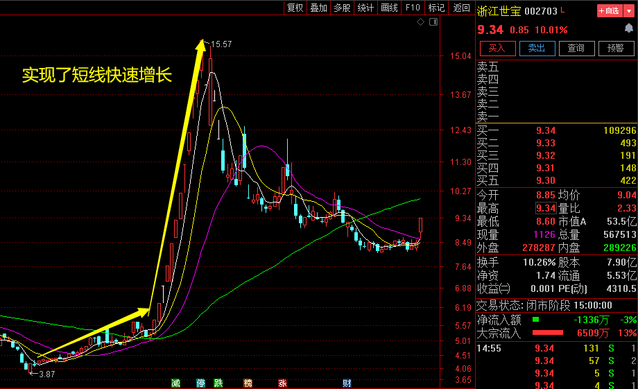
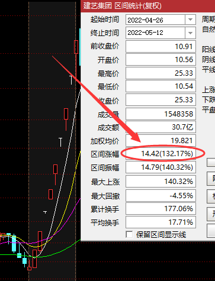

早报 >>行情 >>股市热点
[股市热点] 现任海通证券首席经济学家兼首席策略分析师。 “荀玉根”，23年第一只35%的建仓牛股正式起航！！！
2023年中国的目标国策是要全面进入小康社会，虽然受新冠的影响有些迟滞，正因如此，所以国家会大力发展经济，即将迎来 大行情，接下来两大重磅消息刺激A股，一：权重补跌到位后将迎来一次全面反转行情！将在布局哪些题材？二：2023年3月数字经济-元宇宙延续强势背景下行业成长确定，产业链机会都比较多，这次的领头羊会是谁呢？接下来，荀玉根老师教你如何把握这次风口机会
如今能穿透资本市场的重重迷雾，在股市里“封神”的人物寥寥无几，国内外也就只有巴菲特、索罗斯、李嘉诚等人是公认的大神级股市操盘手，但他们高坐在“神坛”之上，普通人只能遥望。
对于广大的普通投资者而言，可能“平民股神”的创富经验更具借鉴和启示意义。最近两市指数震荡走势，A股涨势如虹，似乎“牛市要来”，各路资金纷纷进入，不少人的投资热情再一次被燃起。
中国证券特意邀请国内外著名的证券培训学校首席经济学家---荀玉根，为大家分享他的股市风云录，希望对各位投资者有所帮助，他的一些投资理念，放到今天看，仍然散发着满满的智慧之光。
荀玉根老师的投资经历堪称传奇：荀玉根在新财富等多个最佳分析师评选中，荣获“全满贯”第一。在2020年新财富最佳分析师评选中，荀玉根在策略研究领域获得头名。海通证券首席经济学家兼首席策略分析师，上海社会科学院经济学博士，注册国际投资分析师，14年宏观策略研究经验，累计荣获17个全国最佳分析师评选冠军，是新财富、水晶球、金牛奖、保险资管业、上证报、新浪财经、第一财经等最佳分析师评选的“全满贯”第一名，新财富最佳分析师评选连续五年夺冠。现在我想说在中国这样一个独一无二的资本市场上，普通投资者如何通过耐心等待并利用一轮大趋势挣到钱。注册制实施之后，上市的公司更多的是民营企业，它们的股份是正儿八经的全流通，上市的供应量也会比以前多，这就导致供求关系逆转。给我们广大股民的机会和挑战也很多，迅速积累财富，在新冠末端实现一部分人的财富自由。 经历早的人在2014—2015年的大行情前，或许听到过13年夏天光大证券“乌龙指”事件，反复强调519行情，那换到现在就是一个政策行情，只是那是技术唯尊，而且到现在已经在股市三十年的历史，人生能有几个三十年，我的青春，我的人生，与投资紧紧绑在一起，三十多年风风雨雨，靠着坚韧不拔的性格，以及次新股打板涨停的方式，在A股市场闯下了赫赫名声，被称为“股市鲁迅”。如今静下心来，每日诵经念佛，能有今日的财富和成就，与玉根我对投资成功的渴望以及坚持努力脱不开关系，我的老友评价我为：“荀玉根是牛股杀手，”其实不然，没有任何一个人的成功生于偶然。
在此荀玉根表示：万小时行研，稳准狠投资。我会利用自己在股市30年的经验，给大家传递一种全新的投资理念，教给大家一些股市投资技巧，选股思路，理解各大游资和机构的运行模式，对股市有更深层次的理解！带领散户朋友们一起在股市中获利。散户也是股市的主力军之一，只是散户从来都是单打独斗，单兵作战，没有凝聚力，亏损严重！
荀玉根履历：上海人，现居上海徐汇
投资经历：
2007年，在大学任教的荀玉根转入证券研究行业，勤奋是他追赶同行的武器——地铁看研报、日常最少工作12小时……他用3-4年时间建立策略研究框架，2011年，他最终在海通证券找到自己的落脚点。
从新人成长为成熟分析师，荀玉根对研究的认识分为两个阶段：一、追求“大而整”；二、慢慢“懂取舍”。而他的研究开始显著受到市场的关注和认可，则与其两次研究的突破密切相关：一次是2013年，他将研究重心从经济周期波动转向产业结构转型；另一次是2016年，他调整和丰富了自己的研究框架，用更长期视角去思考市场，做更多国内外对比分析。
如今荀玉根已入行15年，外人看来他的生活很枯燥，除了睡觉、吃饭、上下班之外，其他时间都会投入到工作中，但是他本人乐在其中，“弄清楚一个问题会让我很有成就感，并带来源源不断的动力”。
为了维持输出端的质量，他非常注重输入端的补给，工作之外，跑步听书是他最大的休闲方式，至今他保持每年听书300多本、精读50多本的习惯。
荀玉根老师，经过长期对股票市场的研究，已经能够形成一种成熟的投资风格，顺应市场变化的投资策略，擅长结合国家政策，行业政策，以及对上市公司基本面的研究，对于把握热点主题投资机遇有自己深刻独到的见解和认知。投资理念成熟，通过趋势分析、策略研判以及风险控制，资金管理，组合配置力求持续获得超额利润。对于趋势顶底的研判非常精准。目前活跃于A股、港股，美股，数字经济交易等市场。
投资特点：
1. 追求复合增长，要100%正确，靠时间去累积，一直往前走，慢慢走，哪怕停几年，也不要后退；
2. 管理好自己，这点很重要，能管理好自己的人，一定会是有钱人；
3. 任何时候，首先要考虑的是风险；
4. 财富是行业给的，个股都是运气；
5. 行业市场空间无限大；
6. 投资的本质，就是投资赚钱机器，投入一定，产出无限大的赚钱机器；
7. 重点投资国家名片；
8. 投资秘诀就是垄断，加上反复消费，具有成瘾性；
9. 投资主线，选择与嘴巴相关的刚需，嘴巴不会少；
10. 企业业务简单，核心产品单一；
11. 毛利率的变化要稳定或趋升；
12. 中国市场以国企为主，十分谨慎的选择民营企业；
13. 买危机，危机爆发后买入一定是对的；
14. 要不平等竞争，弯腰捡钱，不战而屈人之兵；
15. 任何投机市场都是95%的时间不涨或下跌，只有5%的时间是上涨的；
16. 赚钱靠持有，不是靠交易；
17. 赚钱靠泡沫，有泡沫才是赚钱最好时机，惧怕泡沫的人是苦命人；
18. 对于优质稀缺资源，能拥有就是幸福；
19. 什么是风险，该赚的钱没赚到就是最大的风险；
20. 坚定信念，有爱心的，善良的人，一定能赚钱。
近期荀玉根老师还在学员内部交流群里公开了自己手中持有的股票，因常推票常涨停而深受广大股友的爱戴。其推票盈利高而走红还被股民尊称为“股神”。近期被人爆料已有众多股友追随，其部分追随者股票账户已逾千万以上，目前追随者也达上万，据追随者透露， 跟进他推的票大多盈利可达到30%以上。
荀玉根老师每日晚上8点还会在群内透露3点炒股秘诀 （据他透漏称：每日热门股票就是通过这个方法筛选出来的）：
第一步：挖掘市场热门题材
大部分超短线大涨的股票，都有一个热门题材，它们市场空间大，人气高，成交量火爆。如果大家第一时间发现的话，选择龙头股，账户短时间或将快速增值。荀玉根老师善于发现个别短线爆发的个股，例如从今年四月底六月初开始起爆的浙江世宝（002703），从4元附近抓取到15元附近的盈利，这样实现了账户短时间快速大涨增值数百倍。

第二步：选择低位涨停的强势股
选中热门题材后，接下来就是选板块强势的龙头股！荀玉根老师的三十年经验是：优先选择主力低位涨停启动的公司。
选股3大核心关键词：
一是主力：指要有主力资金介入的股票，没有主力资金操作的个股，尽量不要碰
二是低位：指股价距离历史高点下跌50%以上，位于底部附近
三是涨停：这一点很关键，只要不是涨停启动的低位股票，看都不用看
紧扣这3点，选择超短线龙头股的概率增加。以龙头股建艺集团（002789）为例，历史高点下跌79%，5年低位，15日业绩预告增长，后面10个交易日大涨132.17%，羡煞旁人！！

第三步：何时买？何时卖？
紧跟市场热门题材，抓到市场龙头股，何时卖出呢？给分享大家一个很有用的卖出技巧，简单又好用：市场强势股，连续涨停后，有一天没有强势涨停，大概率就是卖出时机！比如说，2021年6月特斯拉题材，市场龙头 蓝英装备（300293），连续4天涨停，第5天没有封上涨停板，及时卖出，可以躲避5天43%的大跌 ，保住珍贵的利润。
分享一下荀玉根其中一个账户的交易情况：
荀玉根老师已经把4月重点布局的热点题材及龙头筛选出来，添加老师助理的微信， 扫描二维码添加可找助理进荀玉根老师粉丝学堂领取荀玉根老师的4月重点布局个股以及方向。
多年来一直从事一线交易，历经A股起伏，穿越牛熊，在多次股灾期间成功逃顶。对趋势把握非常纯熟，心态沉稳，泰山崩于前而面不改色。 操作风格：稳健操作，波段交易，稳定盈利至上。擅长趋势操作、解读基本面、宏观把握政策，熟练运用不同市场环境下各种操作手法， 精心于通过盘面走势判断主力资金的运作规律。
炒股是门学问，想要学习炒股技术扭亏为盈，以及当前大经济环境市场该如何应对的朋友，可以现在添加老师助理的微信，扫码添加即可加入荀玉根老师特邀组建的实战交流群。
荀玉根老师郑重声明：不收取任何费用。只殷切希望当你不再是任市场收割的小散之时，你也可以帮助身边的小散，愿股市能够再少一位散户。如今经济增速放缓、中外贸易严峻时刻牵引着中外投资者的神经，建议大家多看多学少动，不要成为这场没有硝烟战争的牺牲品。
能力越大，责任越大，在荀玉根老师这样强大实力的背景下，新华爱心教育基金会想借助荀玉根在金融圈强大的影响力，出资诚邀荀玉根携手在金融界举办一场以弘扬公益精神为主的周期性股票技术讲座，意在提高所有金融界投资者操作水平的基础上，让金融界爱心人士共同关注新华爱心基金会发起的《捡回珍珠计划》公益活动，帮助大山家境困难，品学兼优德才兼备的孩子，走出大山造福社会造福国家！荀玉根作为此次公开课发起人的初心，希望大家在跟着荀玉根老师赚钱和学习炒股方法的同时。也能一起加入到给大山孩子造梦的行列！
荀玉根老师说：技术利润今常在，少有公益暖人心！股市不是创造财富的地方，而是财富重新分配的地方，个股实战和利润是荀玉根老师的方式，在这场讲座里面，金融圈朋友的技术理念都将得到一场有业余到专业，由深套到盈利的升华与蜕变！希望在学习和盈利同时，能为咱们大山品学兼优的孩子贡献一份力所能及的力量
感谢爱心使者荀玉根带给我们每日精彩分享！也希望广大股民朋友可以把这条信息分享给身边的散户朋友，荀玉根为了广大良友也有组建纯免费的绿色交流群，汇聚五湖四海的民间高手，让更多的散户在接下来的股市投资中得到帮助,有需要的股民朋友可以扫描以下二维码添加一下老师助理的微信
不知不觉我看见这篇文章已经有上万的转载，感谢大家的关注，也希望更多投资朋友一起分享大家的故事。